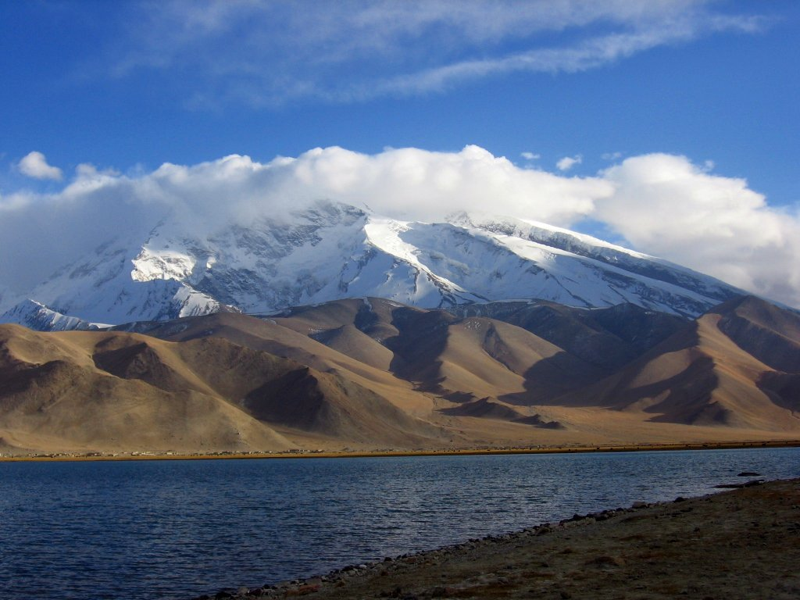

Home
Hi! Welcome to Xinjiang.
Xinjiang is a fascinating tourist destination in China, with the Sayram Lake, Rainbow Beach, Flaming Mountains, Heavenly Lake, and Kanas Lake being among the popular natural attractions. The bustling markets and ancient ruins of Turpan and the vibrant city life in Urumqi are also worth visiting. Moreover, the region's cultural diversity can be explored through the various traditional music, dance performances, and cuisine of its numerous ethnic groups, including the Uyghur, Kazakh, and Hui people. You can access more information about Xinjiang by clicking here.
Spot of Xinjiang

Site Map
Alternatively, use the header bar to navigate around.